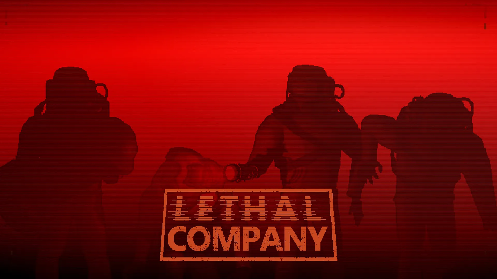
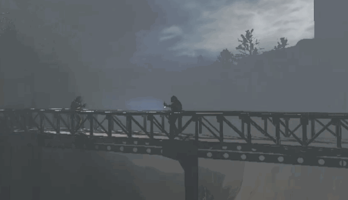
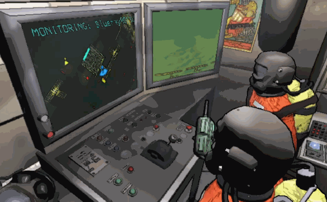

> GIOCO VINCITORE DEL PREMIO "BETTER WITH FRIENDS" 2023
Lethal Company è un videogioco cooperativo per un massimo di quattro giocatori giocati in prospettiva in prima persona, vincitore del premio "Better with Friends" di Steam 2023.
> GAMEPLAY
Ambientato in un ambiente retrofuturistico, i giocatori lavorano come dipendenti a contratto di "The Company". Sono in grado di comunicare tra loro tramite la chat vocale di prossimità nel gioco e la chat di testo. I giocatori hanno il compito di visitare le lune abbandonate per raccogliere quanti più rottami possibili. Ogni luna ha una struttura contenente stanze generate proceduralmente, insieme a rottami, trappole pericolose e creature maligne. I giocatori devono lavorare velocemente e tornare alla loro nave prima di mezzanotte, altrimenti partirà senza di loro. I rottami raccolti vengono venduti sulla luna della Company per ottenere crediti della Company. Alla fine di ogni scadenza, se i giocatori vendono abbastanza rottami per raggiungere la quota richiesta, inizieranno un altro ciclo di tre giorni con un obiettivo di profitto più alto. Il mancato raggiungimento della quota della Company comporta l'espulsione dei giocatori nello spazio.
 